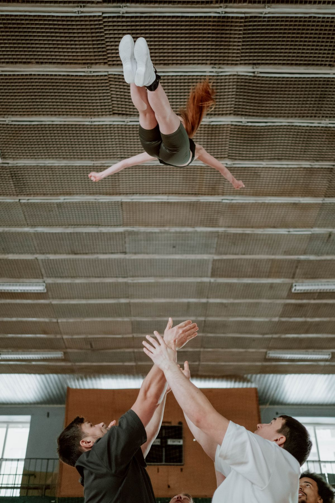
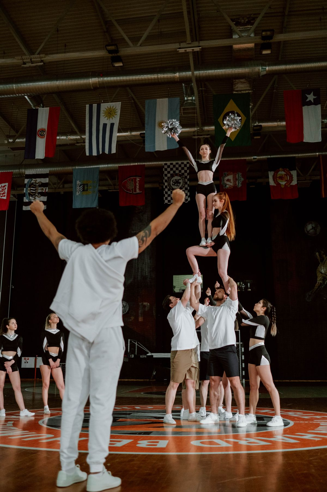

2026-05-28
For more than a century, the hardest job in the gym belonged to the athletes performing between other people's games. Cheerleading began as a sideline act — Britannica's history of the activity traces it to the "yell leaders" of the late 1800s — and as stunts grew higher and tumbling faster, the structure never changed: support someone else's team, then squeeze a season into a handful of weekend competitions. STUNT is the sport built to flip that script. It takes the most athletic pieces of cheer — the lifts, the pyramids, the tosses, the tumbling — strips away the crowd leading, and rebuilds what is left as a head-to-head game with quarters and a scoreboard.
A STUNT game puts two teams on the mat at the same time, divided into four quarters, each devoted to one skill family. The first quarter is partner stunts: small groups lift, extend, and hold a flyer in a series of set sequences. The second quarter moves to pyramids and tosses, including basket tosses that send a flyer spinning toward the ceiling. The third quarter covers jumps and tumbling — toe touches and hurdlers in unison, then standing and running tumbling passes. The fourth quarter, the team routine, stitches all three families into one continuous performance.
The first three quarters have four rounds apiece; the fourth has three, for fifteen rounds total. Before the game, a coin flip decides possession, and possession matters: the team holding it chooses which of the preset routines both teams will perform that round. The routines are published before the season as a ladder of difficulty, from a straightforward Routine 1 up to the most demanding levels on the grid. Both teams perform the identical routine simultaneously, on opposite halves of the floor, while judges watch for cleaner execution. Fewer mistakes wins the round, the point, and possession of the next call.

What makes the format unusual is how little of it is left to taste. In a traditional competition, judges score each team's original routine against a rubric, and no two teams perform the same material. In STUNT, the material is fixed in advance, the routines are identical, and the comparison happens in real time, side by side. A wobble, a bent knee, a step on the dismount — each is an execution error the other team can beat simply by being cleaner. There is no difficulty debate to hide behind, because both teams attempted exactly the same skills at exactly the same moment.
That objectivity is also the strategy. A team trailing late can call a harder routine to raise the ceiling of the round, or protect a lead with a level it has never missed. Coaches manage possession, momentum, and risk the way play-callers do, round by round.
Traditional competitive cheer and STUNT share the same raw skills, and plenty of athletes do both in one school year — competitive cheer in the winter, STUNT in the spring. But the experiences are opposites. A traditional competition is a single routine, performed once, against a whole field of teams you may never watch perform. Choreography, dance, and crowd appeal are part of the score. STUNT removes all of that. There is no dance break, no sign work, no chanting at a crowd watching somebody else. Instead, an opponent stands twenty feet away doing precisely what you are doing, and a scoreboard updates every few minutes.
The training changes with the format. Because every round isolates one skill family, weak spots cannot hide inside a busy routine; a team that tumbles beautifully but builds shaky pyramids will lose the second quarter every week until it fixes them. Skills are taught through progressions — the approach the American College of Sports Medicine recommends for building young athletes' strength and difficulty safely — and rosters run deep, up to 36 athletes, because different rounds call for different specialists.

STUNT's legitimacy in California starts with a law. In 2015, Assembly Bill 949 — the CHEERS Act — was signed to classify competitive cheer as an official interscholastic sport, and when the California Interscholastic Federation rolled the designation out for the 2017–18 school year, STUNT came with it: a spring season with league schedules, section playoffs, and a state championship administered by USA Cheer. Woodcreek High won the first state title that first spring, in 2018. Growth followed fast: coaches counted roughly 20 programs statewide a few years earlier and about 100 within a couple of seasons, and finalists now survive qualifying schedules and a seeded, two-division state tournament each May. For athletes, the change was practical as much as symbolic: STUNT results now live in the same record books and trophy cases as every other spring sport.
The high school game is actually the younger sibling. USA Cheer created STUNT at the college level, staging the first collegiate seasons in 2011, engineering it to satisfy the criteria colleges use to recognize a varsity sport: defined seasons, objective scoring, real opponents. More than 100 colleges and 400 high schools have fielded teams since. The NCAA took notice: STUNT joined its Emerging Sports for Women program in 2023 for Divisions I and II, and in 2024 for Division III, and the sport cleared the program's 40-school sponsorship benchmark in its first year at all three levels. Then, at its January 2026 convention, the NCAA membership voted in all three divisions to make STUNT a championship sport, with the first NCAA championship set for spring 2027. For a high school flyer, the meaning is concrete: the skill set that used to end at graduation now leads to college rosters, scholarships, and a national title chase.
Photographs by cottonbro studio, courtesy of Pexels.